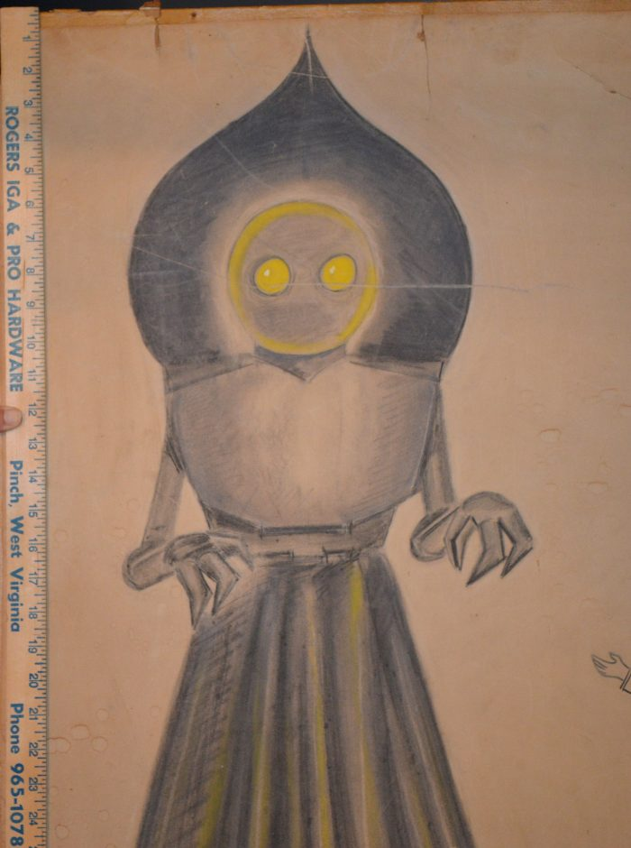
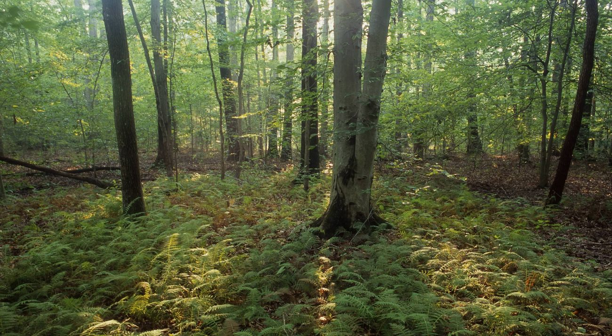
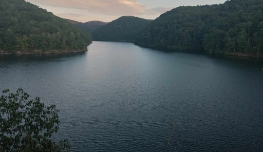

What we're about
This site dives into one of America's most enduring mysteries—the Flatwoods Monster encounter of 1952. From the moment a strange light tore across the night sky to the chilling reports from the dark woods of West Virginia, the story unfolds like something between fact and folklore. We follow the full timeline of events, explore what the witnesses experienced, and examine the competing theories that still leave room for doubt. Along the way, we also trace how the Flatwoods Monster escaped that single night in history, evolving into a lasting figure in games, stories, and modern pop culture—kept alive by curiosity, imagination, and unanswered questions.
The Night of the Sighting
On the evening of September 1952, a bright object was seen streaking across the sky over Flatwoods, West Virginia. What seemed at first like a meteor quickly turned into something far more unusual. A group of local witnesses followed the object to a nearby hillside, where they reported a strong metallic smell and the presence of a towering, unnatural figure in the darkness. Described as nearly ten feet tall with glowing features and a strange, spade-shaped form, the encounter ended in panic as the group fled the area. In the days that followed, several witnesses experienced physical symptoms, deepening the mystery of what truly occurred that night.

What Really Happened?
Some explanations suggest the Flatwoods encounter may have had a more natural origin, possibly a barn owl seen under extreme conditions of darkness, where its glowing eyes, defensive posture, and movement could be misread as something far more unusual. Others point to the influence of 1950s science fiction, where growing ideas of alien visitors may have shaped how the witnesses interpreted what they saw. In that moment, fear, uncertainty, and imagination may have filled in the gaps of a confusing event. But even with these explanations, one question remains: how do we fully separate what was actually there from what the mind was capable of seeing?

In Media
The Flatwoods Monster did not fade after the events of 1952—it spread. What began as a local encounter in West Virginia slowly grew into something far larger, taking root in the world of popular culture. Over the decades, the creature has been reinterpreted through video games, documentaries, artwork, and storytelling, each version reshaping its identity while preserving its mystery.

End of the Investigation
The Flatwoods incident remains one of the most debated encounters in cryptid history. Whether viewed as a misinterpreted natural event or something truly unknown, the story continues to raise questions that have never been fully answered.
Use the navigation above to explore each part of the story—from the sighting itself, to the theories behind it, and how it continues to exist in modern media.